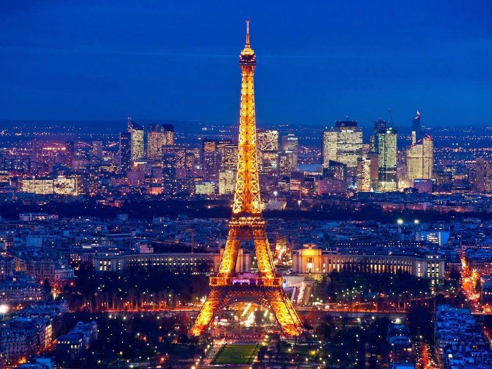

.png)
Altas temperaturas têm pressionado matriz energética do país e levado à flexibilização de regras ambientais. Ainda assim, dificuldades não despertam questionamentos sobre modelo nuclear francês.
Como outros países europeus, a França tem registrado temperaturas de até
40 °C por várias semanas durante o verão do hemisfério norte.
As usinas nucleares normalmente geram mais de 70% da eletricidade na França – a porcentagem de participação das fontes nucleares na matriz energética do país é a maior entre todas as nações do mundo.
ativista ambiental do grupo FNE86, essa foi uma decisão exasperante."Eu simplesmente não consigo entender como eles podem manter os reatores funcionando embora isso tenha um impacto desastroso no ecossistema", disse Delfau à DW. Ele acrescentou que os processos de resfriamento da usina aumentaram a temperatura da água do rio em 6 °C, o que tem provocado efeitos em toda a cadeia alimentar. "A água mais quente destrói microalgas que servem de alimento para certos peixes pequenos, dos quais peixes maiores se alimentam", Além disso, nas atuais condições, um quinto desses reatores deveria estar com as atividades interrompidas ou pelo menos reduzidas ao mínimo, explica Delfau, de 79 anos, que atua como ativista antinuclear há mais de 50 anos.
"Além disso, a água mais quente contém mais bactérias. Para torná-la potável, temos que adicionar muitos produtos químicos, que as pessoas depois bebem." Qual a origem principal da geração de energia na França? A maior parte da energia elétrica da França é de origem nuclear! Existem na França mais de 50 usinas nucleares em funcionamento para a geração de energia elétrica. A França utiliza e também exporta energia nuclear para outros países da Europa. A EDF é responsável por produzir e distribuir energia em território francês. para impedir que a temperatura da água usada no resfriamento dos reatores não seja devolvida aos rios acima de um certo limite de temperatura.
Abastecidos pelo sol, eles economizam energia elétrica e dispensam o uso de geradores a diesel. O dispositivo utiliza energia solar fotovoltaica, ou seja, transforma a radiação solar em energia elétrica, que alimentará a luminária LED. É uma alternativa versátil e muito eficiente, que facilmente se adapta .

Os postes solares apresentam uma excelente proporção entre o custo de aquisição, manutenção e retorno em iluminação. Uma escolha assertiva a curto e longo prazo. Os postes solares proporcionam economia de diversas formas, como agronegócio, estradas, condomínios, estacionamentos, entre outros.

São construídos com uma tecnologia resistente a variadas alternâncias climáticas, além de não deixar a propriedade vulnerável às instabilidades das redes elétricas, que podem causar danos aos componentes, fatores estes que tornam O poste solar autônomo produto ideal para atender grandes projetos.
A energia solar pode ser bastante útil de várias maneiras, ela pode ser ultilizada por meio de 3 tecnologias: Energia solar térmica, aquecendo água e outros líquidos, pela arquitetura bioclimática, planejando o imóvel para otimização do uso da luz solar e pela Energia Solar Fotovoltaica, gerando energia elétrica para o estabelecimento, o nosso produto será voltado para a energia Solar Fotovoltaica. Para entendermos o que a Éclairage oferece, qual sua proposta e os impactos que ela tem ao meio ambiente, devemos entender o que é e como funciona a energia Solar Fotovoltaica.
A energia solar fotovoltaica é obtida quando a luz solar se converte em eletricidade, utilizando uma tecnologia baseada no efeito fotoelétrico. Trata-se de um tipo de energia renovável, inesgotável e não poluente, que pode ser gerada em instalações que vão desde os pequenos geradores para autoconsumo até as grandes usinas fotovoltaicas. Baseia-se no denominado efeito fotoelétrico, através do qual determinados materiais são capazes de absorver fótons (partículas luminosas) e liberar elétrons, gerando corrente elétrica. Para isso, se utiliza um dispositivo semicondutor denominado célula solar ou célula fotovoltaica, que pode ser de silício monocristalino, policristalino ou amorfo, ou outros materiais semicondutores de camada fina. As células de silício monocristalino são obtidas a partir de um único cristal de silício puro e alcançam a máxima eficiência, entre 18 % e 20 % em média. As células de silício policristalino são elaboradas em bloco a partir de vários cristais, sendo portanto mais baratas e têm uma eficiência média que se situa entre 16 % e 17,5 %. Finalmente, as células de silício amorfo têm uma rede cristalina desordenada, o que implica um pior desempenho (eficiência média entre 8 % e 9 %), assim como um preço inferior.
Sendo assim, essa energia pode ser aproveitada de diversas formas, a energia solar fotovoltaica conta com os mais variados benefícios para o consumidor de modo individual e coletivo. Sendo assim, há diversas maneiras de empregarmos a captação de energia fotovoltaica por meio dos painéis solares. Como
Além disso, é possível aplicar a energia solar fotovoltaica para a iluminação de espaços públicos como praças, luzes de led e até mesmo em projetos escolares. Essa prática auxilia na economia de gastos com conta de luz em até 95%. A energia solar fotovoltaica pode ser aproveitada ao máximo com uma boa alocação e manutenção do sistema que capta a Recarga de aparelhos eletrônicos; Funcionamento de aparelhos domésticos; Iluminação pública; Eletrificação de cercas; Sistemas de uso coletivo, tais como geração de energia elétrica para escolas, postos de saúde e centros comunitários; energia, em áreas mais altas da propriedade onde há maior incidência de raios solares.
Sabemos que París é muito conhecida pela sua beleza e luzes chamativas, denominada por muitos de cidade da luz. Isso acontece por que durante séculos as mentes mais iluminadas nas diversas vertentes das artes eram atraídas para París. Porém, essa iluminação toda acarreta em um grande gasto de energia, trazendo problemas a sociedade e ao meio ambiente. Com isso, temos o intuito de propor que a cidade da luz continue luminoza mas, de uma forma inovadora, sustentável e com eficiência energética. Através de postes de iluminação solar fotovoltaica, que é uma energia renovável e limpa.
O aquecimento da água do mar: Durante o processo produtivo da energia
nuclear, utiliza-se água do mar para resfriar o reator e movimentar as
turbinas. Essa água é devolvida para o ambiente mais quente do que quando
foi encontrada, podendo ocasionar danos para a fauna e flora marinha.
Contaminação pelos rejeitos da produção de energia nuclear:Um dos
principais impactos causados por esse tipo de produção é a contaminação
pelos rejeitos radioativos, que permanecem nocivos ao meio ambiente por
milhares de anos. Toda fissão nuclear gera rejeitos radioativos, que devem
ser armazenados em recipientes revestidos de chumbo ou concreto e serem
monitorados constantemente para evitar a contaminação do meio
ambiente. Em um passado recente, por não saberem como proceder com o
descarte desse material, alguns países chegaram a jogar esse material no
mar ou abandonar o lixo radioativo em minas ou cavernas, causando um
grande desequilíbrio nos ecossistemas afetados.
Risco de contaminação derivada de acidentes e vazamentos: Embora possua monitoramento constante, o processo de geração de energia nuclear possui riscos de vazamentos e acidentes, como os que aconteceram em Como o produto funciona e quais impactos ao meio ambiente? Os postes são autossustentáveis, já que geram sua própria energia através de uma fonte limpa e renovável. Também não emitem ruídos ou CO2 na atmosfera, o que acarreta num baixo impacto ambiental. Gera menores consequências para a natureza durante a sua fabricação e a sua vida útil do que outros métodos convencionais de iluminação, como as redes de iluminação elétrica e luminárias que possuem lâmpadas de sódio ou vapor metálico. Em suma, um grande benefício ao planeta. Sua instalação terá um impacto significativo ao meio ambiente, por ser inesgotável e não poluente, diferente da energia nuclear que é a maior fonte de energia usada por París que também é a segunda maior produtora de energia nuclear, atrás apenas dos Estados Unidos. Todavia, sua produção apresenta diversos riscos para o meio ambiente, a sua produção apresenta diversos riscos ao meio ambiente e seres vivos, já que se baseia na manipulação de produtos radioativos muito nocivos à vida e ao ambiente. Entre os principais impactos ambientais que podem ser originados pela geração desse tipo de energia. Chernobyl (1986) e em Fukushima (2011), que colocam em risco o meio ambiente e a vida de trabalhadores das usinas e dos demais seres vivos que recebem a radiação. Com isso, a substituição da energia nuclear por energia solar fotovoltaica em postes trará benefícios significativos ao meio ambiente, além de placas solares fotovoltaicas (ou módulo fotovoltaico) e bateria, o poste de energia solar também é composto por um controlador de carga – quem acende a luminária – e lâmpadas de LED, itens que tornam o equipamento ainda mais sustentável. Individual, ou seja, sem a necessidade de dispositivos elétricos, cabos, valetas ou máquinas especiais para fixação no terreno, a instalação do poste solar é mais rápida e barata quando comparada à de postes convencionais; claro, desde que realizada por empresas e/ou profissionais habilitados. Materialmente, esses postes de iluminação solar são similares a postes comuns. A diferença está em seu funcionamento, que ocorre de forma autônoma e é alimentado pela energia fornecida pelo sol e instalada no próprio poste.
Seus benefícios não se minimizam apenas aos bens que trarão ao meio ambiente mas, também a independência da rede elétrica, economia, instalação simplificada e baixa manutenção.
Independência da rede elétrica -
Uma vez abastecidos pelo sol, eles economizam energia elétrica e dispensam o uso de geradores a diesel. O dispositivo utiliza energia solar fotovoltaica, ou seja, transforma a radiação solar em energia elétrica, que alimentará a luminária LED. É uma alternativa versátil e muito eficiente, que facilmente se adapta a áreas mais afastadas da rede, como agronegócio, estradas, condomínios, estacionamentos, entre outros.
Economia –
Os postes solares apresentam uma excelente proporção entre o custo de aquisição, manutenção e retorno em iluminação. Uma escolha assertiva a curto e longo prazo. Os postes solares proporcionam economia de diversas formas:
Instalação simplificada –
A instalação do equipamento é mais simples do que a de um poste convencional: como não é necessário conectá-lo a rede elétrica, a instalação de cada poste é individual, não sendo necessária toda a infraestrutura para conectá-lo aos demais postes do projeto e à rede elétrica.
Baixa manutenção –
São construídos com uma tecnologia resistente a variadas alternâncias climáticas, além de não deixar a propriedade vulnerável às instabilidades das redes elétricas, que podem causar danos aos componentes, fatores estes que tornam o produto ideal para atender grandes projetos. O poste solar autônomo da Demape atende à todas as normas e certificações técnicas de mercado.
whatsapp business :+55 82 9957-7641